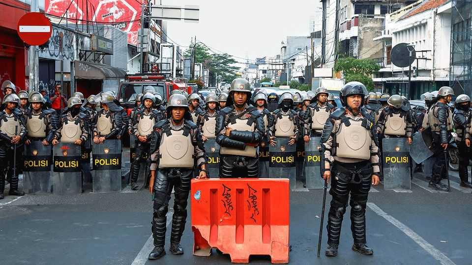
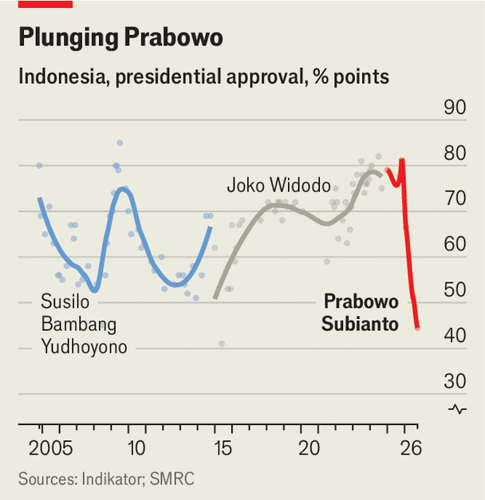
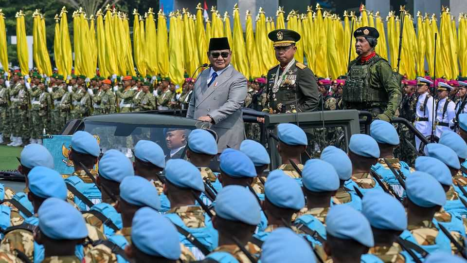

Indonesia’s experiment with populism is wavering
How will Prabowo Subianto respond to crashing approval ratings?

Oct 22nd 2026
HAFIDZ HERNANDA was riding down a quiet street in Jakarta, Indonesia’s capital, close to midnight on October 4th when another motorcyclist kicked his bike, knocking him to the ground. Two more men joined the attack as the assailant beat Mr Hafidz and threatened to kill him. Afterwards they took his phone and bag, robbery seemingly an afterthought. The police say they are investigating, but no suspects have been identified.
The assault was notable because Mr Hafidz has become one of the highest-profile organisers against President Prabowo Subianto, leading two protests by students against his policies earlier this year. On the night of the assault he was riding back to his home near the University of Indonesia from a meeting with other student activists at a roadside eatery. There, they had been planning a demonstration against Mr Prabowo on October 20th, the second anniversary of his inauguration.
It was a protest that the administration desperately sought to prevent from going ahead. In the days after the attack on Mr Hafidz, army and police officers pleaded with students to stay at home. One activist says he was offered a bribe if he could persuade students not to hit the streets. On the morning of the anniversary, police said they had deployed 9,500 officers to keep demonstrators in line. If that was intended to intimidate them, it seems to have worked. Only a few hundred hardy students gathered in central Jakarta to demand that Mr Prabowo do something about high prices and what they call a long list of failures of his administration.
Mr Prabowo, whose father-in-law, the dictator Suharto, lost power amid mass demonstrations in 1998, has long had a fear of the street. That anxiety was reinforced in August 2025 when protests by students and workers against corruption and police brutality led to days of unrest and calls for broader political reforms. At the time, Mr Prabowo called a press conference where he gave in to some of their demands. He later watered down his promises after the protests died down.

But that was when Mr Prabowo still enjoyed unprecedented popularity, with 81% of those surveyed in November 2025 telling pollsters that they approved of the job he was doing. Since then, his approval ratings have seen record declines. In a survey released on October 16th, only 45% said they were satisfied with his performance. That figure would be the envy of many Western leaders, but in Indonesia—where, for cultural reasons, many respondents are shy about being too damning in responses to pollsters—it is near historic lows.
Those who disapprove of Mr Prabowo’s performance mostly cite higher prices for necessities, not his heavy-handed approach to politics, as the reason for their dissatisfaction. America’s war against Iran has driven up the cost of importing fuel, while a strong El Niño is driving agricultural yields down. The prices of staples have soared. Bird’s-eye chillies, which give Indonesian food its kick, have risen by 76.5% compared with a year ago. The prices of chickens, eggs and rice are all up, too. But the drivers of inflation, the war and the weather, are out of Mr Prabowo’s control.
That leaves the president in a bind. He could double down on the expensive populist programmes that have become his hallmark in office, like his “free nutritious meals” scheme and a network of 80,000 state-run village co-operatives. The former had been curtailed this year so as to fund expensive petrol subsidies popular with voters. Mr Prabowo might try to win back his former supporters by ramping the free meals programme up again. But surveys also suggest that Mr Prabowo’s signature programmes are less popular than before.
New handouts may therefore follow. On October 13th the president’s influential younger brother, Hashim Djojohadikusumo, proposed that every citizen be given a free mobile phone. Linked to a free bank account, the phones would bring Indonesia’s unbanked into the formal financial system, he argued. It would also, no doubt, endear Mr Prabowo to many voters.

Another possibility is that a less popular Mr Prabowo will crack down on dissent and political opposition. There is no clear evidence that Mr Hafidz’s assault was directed by his administration, but that has not stopped activists from implying that it was. The possibility is hard to dismiss, given Mr Prabowo’s past. As a special-forces commander under Suharto, Mr Prabowo kidnapped dozens of student activists in 1997 and 1998. He admits doing so and says he returned them all unharmed. But some were never heard from again.
The street is not the only source of opposition to the president. Foreign investors and local tycoons are turning against him, too. The main stock-market index sank by nearly 12% on October 16th and is down by 40% so far this year, making it the world’s worst performer—and indeed, in the two years since his inauguration. Foreign capital is fleeing what was once a promising emerging market. Investors blame regulatory uncertainty and a lack of transparency. Local tycoons, particularly those who are ethnically Chinese, say they fear shakedowns by Mr Prabowo’s lieutenants. They have been stashing money abroad rather than investing it at home.
The turmoil has united political-party bosses quietly eyeing moves against the president. The most concerning for Mr Prabowo must be the signs of a rift with his predecessor, Joko Widodo. The two were once rivals but teamed up in the 2024 election, when Gibran Rakabuming Raka, Mr Widodo’s son, joined Mr Prabowo’s presidential ticket as his running mate. That gave them a landslide victory. A falling-out between the two would make any prospect of winning a second term at the next election, in 2029, a fantasy. Kevin O’Rourke of “Reformasi Weekly”, a newsletter, says that if Mr Prabowo’s poll numbers remain so low, he may not risk facing the voters.
Instead, he could amend the constitution to end direct presidential elections. Parliament would select the president and vice-president, as was the case until 2004, letting Mr Prabowo avoid a referendum on his performance and win a second term through backdoor deals. But to do so would surely spark the kind of street protests he seems so desperate to avoid. ■
For exclusive coverage of Asian politics, economics and security, sign up to Asia Bulletin, our weekly subscriber-only newsletter.